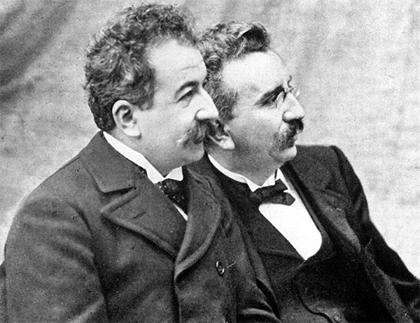

Les frères Lumière, Auguste (né le 19 octobre 1862) et Louis (né le 5 octobre 1864), étaient des inventeurs français et des premiers créateurs du cinéma. Ils sont surtout connus pour avoir fait le cinématographe, une machine qui peut filmer et montrer des images qui bougent. Leur première projection en public a eu lieu le 28 décembre 1895 à Paris. Cet événement a marqué le début du cinéma. Les frères ont fait des petits films connus, comme La Sortie de l'usine Lumière et L'Arrivée d'un train en gare de La Ciotat. Beaucoup de gens ont trouvé cela très intéressant. Même s’ils ont travaillé sur d'autres inventions après, leur travail a beaucoup changé le monde du cinéma. Aujourd’hui, on les considère comme des personnes très importantes dans son histoire.
